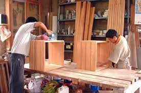

MATERIALES MAS USADOS
Contents
MATERIALES MAS USADOS#
ALMACÈN “EL MUEBLE”#
ELEGANCIA,DISEÑO Y CALIDAD#
MUEBLES#
A la hora de elegir un mueble para el hogar es importante conocer bien los materiales de muebles a medida que se utilizan en su fabricación, ya que son muy variables dependiendo del mueble y la materia prima utilizada. Por eso es importante estar bien informado para tomar la decisión correcta si queremos un mueble que dure muchos años y se conserve como el primer día.
Aglomerados#
Tiene una densidad baja de madera y está considerado de poca calidad, aunque dentro de los aglomerados también los hay de distintas calidades, dependiendo de su composición y densidad. Está compuesto de viruta de madera, elementos químicos y compactado y debe tener un mínimo de calidad para que los herrajes queden perfectamente y los tornillos puedan unir bien los distintos tableros. Los muebles construidos a base de conglomerado no son recomendables por su baja calidad, tan solo pueden ser una buena opción para el interior de vestidores y armarios siempre que tengan una densidad alta. También se pueden utilizar en muebles de cocina y baño pero siempre que tengan un tratamiento especial hidrófugo.

Tableros MDF#
Este material está compuesto de fibra de celulosa compactada con unas resinas especiales. Tiene mayor calidad que el conglomerado debido a su densidad y a la utilización de maderas macizas, por eso su precio es superior. Entre los materiales de fabricación en los muebles a medida se considera al MDF como un material premium, con acabados en mate, brillo o laca.